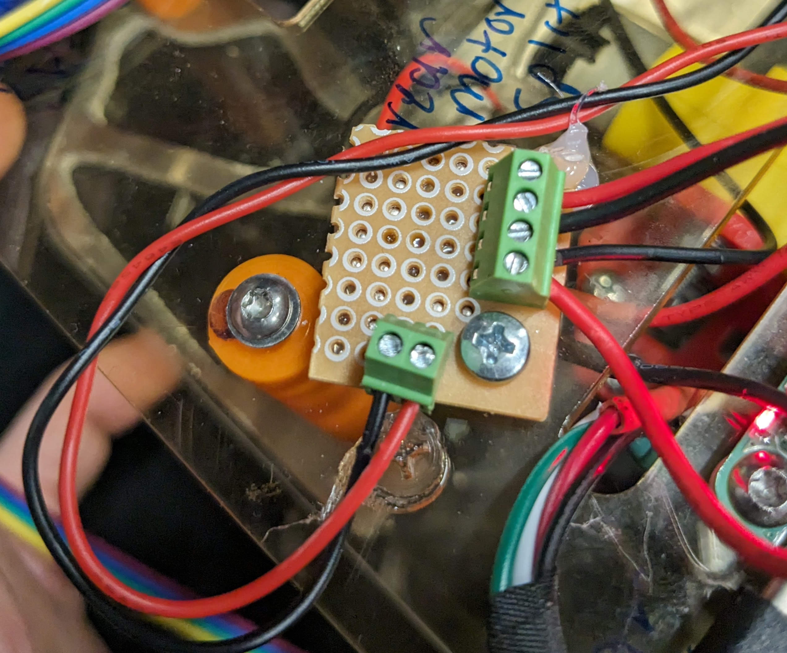
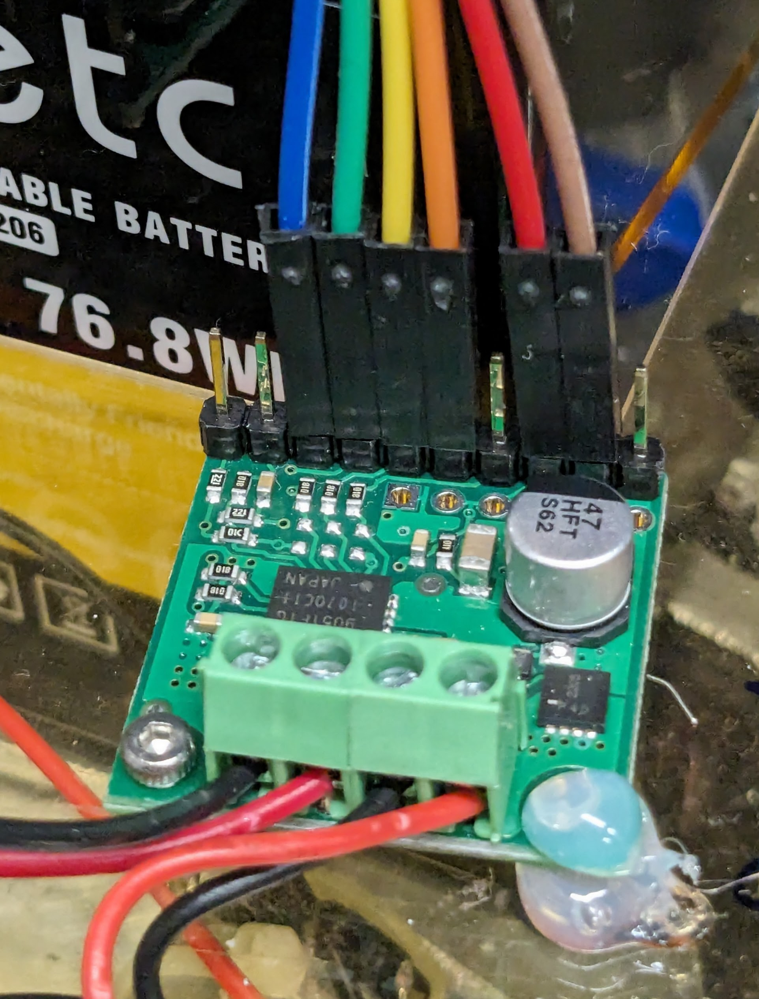
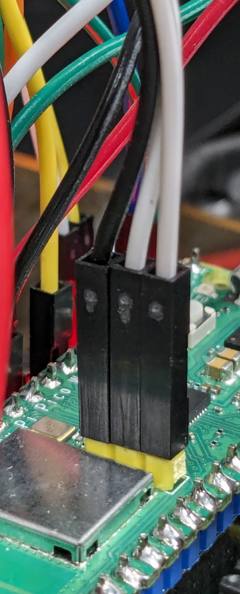
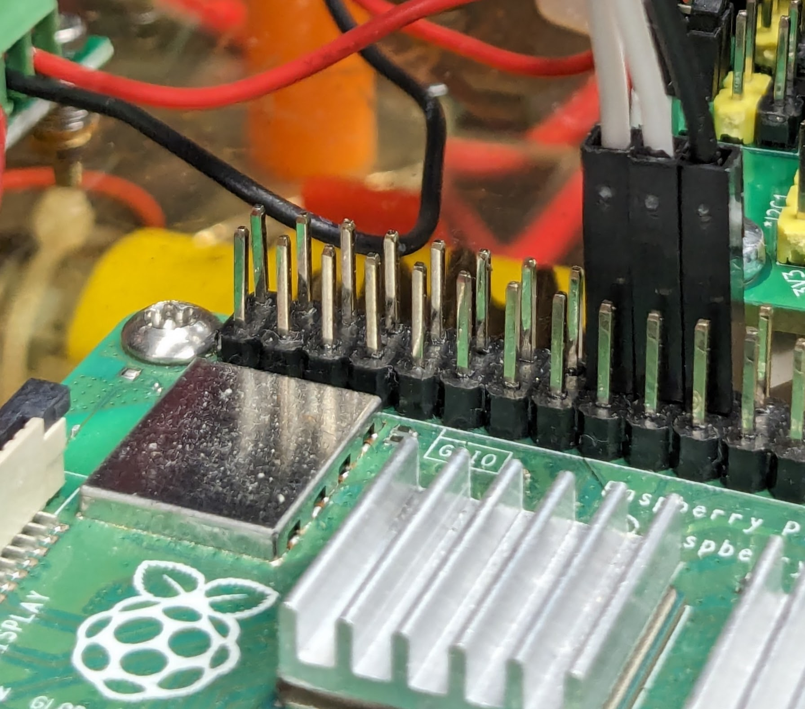

Introduction
Where to Start
bro just ask jeannette
Building Her
For mechanical notes... ask Jeannette.
Rear Motors
Ensure the rear motors are connected to their motor controller with opposite polarity (i.e., ensure the black lead of one motor is connected to the red lead of the other), and connect the joined leads to the output of the motor controller. The polarity (if wrong) will be corrected in a later step. One way to do this neatly is to have a splitter after the motor controller (input on the bottom, output on the right):

Steering Motor
The steering motor has six wires coming out of it -- two for power, four for the encoder control. Those hook up to the Pico as follows (indexed by color):
| Color | Function | Connect To |
|---|---|---|
| red | motor power | motor controller output |
| black | motor power | motor controller output |
| blue | encoder power | +3.3 V |
| green | encoder ground | pico ground |
| yellow | encoder signal | pico pin 2 |
| white | encoder signal | pico pin 3 |
Motor Controllers
Connections for the motor drivers will be referenced to... the following photo, as it's much easier to talk about colors than about pin numbers when you can't actually see the pin numbers written on the board.
Note: the right side of the green terminal block connects to controller power (red positive, black ground), and the left side of the block is the output.

Steering Motor Controller
| Color | Function | Connect To |
|---|---|---|
| red | logic power | +5 V |
| brown | logic ground | pico ground |
| orange | enable | pico pin 4 |
| yellow | ~enable | pico ground |
| green | polarity | pico pin 5 |
| blue | polarity | pico pin 6 |
Rear Motor Controller
| Color | Function | Connect To |
|---|---|---|
| red | logic power | +5 V |
| brown | logic ground | pico ground |
| orange | enable | pico pin 11 |
| yellow | ~enable | pico ground |
| green | polarity | pico pin 12 |
| blue | polarity | pico pin 13 |
Rear Encoders
The rear encoders each have four wires coming out of them, which connect as follows.
Right Rear Encoder
| Color | Function | Connect To |
|---|---|---|
| red | encoder power | +3.3 V |
| black | encoder ground | pico ground |
| green | encoder output | pico pin 7 |
| white | encoder output | pico pin 8 |
Left Rear Encoder
| Color | Function | Connect To |
|---|---|---|
| red | encoder power | +3.3 V |
| black | encoder ground | pico ground |
| green | encoder output | pico pin 9 |
| white | encoder output | pico pin 10 |
Single Wire Debug
These connections are hard to describe, so just take a look at the following pictures. Note that the order of the wires is flipped between the two, and that the wires are plugged into the Pi on outside GPIO pins 9, 10, and 11.


Tools
Programming Her
Oh joy! ssh into the Pi for all of this.
Packages You'll Need
This is what you'll need (probably):
apt update
# for docker (obvs)
apt install docker.io
# for pico sdk
apt install cmake gcc-arm-none-eabi libnewlib-arm-none-eabi build-essential
# for openocd
apt install libtool pkg-config autoconf automake texinfo
Cloning the Repo
To clone the repo and initialize all the submodules:
git clone git@github.com:CooperUnion/carrie.git # if you have repo access
cd carrie/
git submodule update --init
Creating & Using the Docker Image
There are some convenience scripts available for your convenience.
cd pi/
./container-init.sh # once, to create the container
./container-run.sh # whenever you need to use it
Building OpenOCD
You'll have to use a custom-built version of OpenOCD, alas, to get things working on the Pi. See here for the original instructions.
cd pico/openocd/
./bootstrap
./configure --enable-ftdi --enable-sysfsgpio --enable-bcm2835gpio
make
sudo make install
Building the Firmware
There are more convenient convenience scripts for your convenience here, too!
cd pico/firmware/
./compile.sh
Loading Code & Debugging
You'll want to be in a tmux session with a few panes for this.
In one pane, run the OpenOCD server. This allows for loading code & debugging the Pico via SWD.
./openocd-server.sh
In another pane, start gdb:
./debug.sh
The gdb pane gives you full debugging power, live. To load new code onto the
Pico, compile the project, then run the following inside gdb (possibly after
pressing Ctrl-C to stop the Pico running):
(gdb) load
(gdb) monitor reset init
(gdb) continue
Working with ROS
This could be (unfortunately) a book in itself.